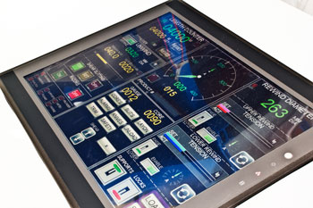

All drives and controls are integral, but can be supplied in a separate control unit if required.
Colour touch screen incorporating all machine operations. This system has a job data memory recall system. Message displays indicate faults conditions such as guards open or E-stop pressed. The comprehensive system has been designed to be simple and straightforward to operate but with extensive diagnostic when required.
£9,999
The controls are designed to be very simple to operate yet the system has extensive diagnostics should they be required. We also provide a port on the system for secure Internet access to allow our engineers to monitor the performance of the machine remotely. To utilise the remote diagnostic system, we require the customer to provide a static IP address with port forwarding.
£9,999
AC Vector Motors with closed loop feedback. A fail safe disc brake is included for fast emergency stopping and holding the shaft stationary during roll changes.
£9,999
Digital AC vector drives from Emerson Control Techniques with high speed communication between drives. The DC bus of the two drives is linked so that when a drive is in braking mode, the energy generated is used to feed the drive that is consuming power. This greatly reduces the energy consumption of the machine.
£9,999
Machine guarding to prevent access to the machine whilst operating at speeds greater than 15m/min. We provide physical barriers around the machine with light barriers to allow access to the unwind and rewind. Universal ensures its machines conform to International safety standards including EN 13418:2008.
£9,999